Savings goals and Levi, the starter.
Release 1 adds savings goals; release 2 adds Levi, a sourdough starter fed by good money habits, and the bakery shelf. Everything the brief asks for is here as static pages, components, tokens, SVG assets, motion and copy. Open any page and resize below 768 px for the phone layout. Every page has a light twin (.light.html).
1 · Screens and states
All pages are wired: header, tabs, rows, dialogs and drawer link to each other. Out-of-scope screens (ledger, budget…) link to placeholders.
| Screen / state | Release | What it shows | Dark | Light |
|---|---|---|---|---|
| TODAY | ||||
| Today | 1+2 | period, can-I-afford-it, net worth, Levi and top 3 goals summary, Upcoming | dark | light |
| Today · afford check dips into goals | 1 | the amount is more than all free money (cash accounts after planned payments, minus what goals hold), so the warning names how much would come from goals | dark | light |
| Today · no goals yet | 1 | the goals slot invites creating one | dark | light |
| Today · check-in done | 2 | today covered by the tap or because something was logged | dark | light |
| Today · Levi dormant | 2 | 14 days unfed: lid on, sleep bubble, the easiest way to wake it | dark | light |
| Today · starter hidden | 2 | Show Levi off in Preferences: no badge, no Levi; goals stay | dark | light |
| GOALS LIST | ||||
| Plan → Goals | 1 | 4 goals in the user's order, archived closed, bakery shelf with 2 loaves | dark | light |
| Plan → Goals · no goals | 1 | 0 goals: kind explainer and [ new goal ], empty shelf | dark | light |
| Plan → Goals · one goal | 1 | a single fresh goal, no reorder handle, empty shelf | dark | light |
| Plan → Goals · 10+ goals | 1 | 11 goals covering every status line, archived open, 22 loaves wrapping onto a second shelf | dark | light |
| GOAL DETAIL | ||||
| Goal detail · envelope (Vacation) | 1 | per-account breakdown, progress, allocation history; actions allocate, release, edit, archive | dark | light |
| Goal detail · net worth | 1 | net worth against target, forecast chart to the deadline with target line, projection and monthly gap | dark | light |
| Goal detail · envelope behind (New laptop) | 1 | unreached envelope with a deadline: behind, projection at the current pace, what it takes to make it | dark | light |
| Goal detail · envelope, no deadline (Emergency fund) | 1 | no deadline: the status is an estimate from the recent pace | dark | light |
| DIALOGS | ||||
| Dialog · new goal | 1 | kind first, then name, target and currency, deadline, colour, note; phone sheet below 768 px | dark | light |
| Dialog · new goal · errors | 1 | net-worth goal with target below today and deadline past five years | dark | light |
| Dialog · allocate | 1 | goal, account combobox showing free balances, amount and date, live result line | dark | light |
| Dialog · allocate · not enough free | 1 | amount above the account's free balance, with quick fixes | dark | light |
| Dialog · allocate from a EUR account | 1 | foreign-currency account: amount in EUR, the goal grows by the PLN equivalent at today's rate | dark | light |
| Dialog · edit goal | 1 | same form as new goal, prefilled; kind is fixed once money is allocated | dark | light |
| Dialog · release | 1 | same shape as allocate, reversed; shows what the account holds for the goal | dark | light |
| Dialog · archive · reached | 1 | reached envelope still holding money | dark | light |
| Dialog · archive · not reached | 1 | not-reached envelope; plain words, no dough | dark | light |
| ACCOUNTS | ||||
| Accounts · allocated and free | 1 | asset rows gain set-aside bar, allocated and free; liabilities show nothing | dark | light |
| Accounts · over-allocated | 1 | balance fell below what goals hold: panel notice plus row marker linking to the goals | dark | light |
| STARTER | ||||
| Levi drawer | 2 | Levi large, recent feeds, setup milestones and achievements; renaming lives in Preferences | dark | light |
| MOMENTS | ||||
| Plan → Goals · loaf baked | 2 | goal reached: the new loaf rises onto the shelf and a toast confirms | dark | light |
| Today · milestone toast | 2 | first reconciliation toast in the polite toast region; routine feeds only animate the badge | dark | light |
| Welcome · meet Levi | 2 | first time a user sees the starter (release 2 launch or new user) | dark | light |
| SETTINGS | ||||
| Settings → Preferences | 2 | Appearance, Starter (shown / hidden, name) and Workspace | dark | light |
| Settings → Preferences · Levi hidden | 2 | hidden: name field hides, the badge leaves the header | dark | light |
2 · How it's wired
| Starter state | Server sets data-state="dormant|sleepy|bubbly|rising|overflowing" on .rd-starter and inlines the matching SVG. Health stays internal; we show the state and recent feeds. |
| Feeds and waking | JS adds .is-fed for 700 ms on each feed (card and badge) and .is-waking for 1.1 s when dormant wakes, then swaps the SVG. State changes crossfade through .rd-starter__swap. |
| Badge | Desktop header, left of [ new entry ]. Phone: top header, left of settings, because the bottom bar's five slots are taken. Links to the drawer. |
| Goal colour | data-color="<preset>" on goal tags and loaves: the ten New-category presets (red, orange, yellow, lime, green, teal, sky, indigo, purple, pink) or default. The picker is the category picker: default colour, ten swatches, ring, preview. |
| Bars | Goal bars follow the DS rule: saved cells in --bar-save (now-fill: lime in dark, orange in light), the rest in ░, ▒ for unbacked. The credit-card row keeps the existing used/available bar. |
| Hero ASCII loaf | Today and Goals carry the DS ASCII loaf (it grows denser with savings on Goals). Hidden below 768 px so it never crops. |
| Settings in the prototype | js/app.js (loaded in every page's head, before paint) makes Settings → Preferences real. Theme (system / light / dark) sets data-theme on <html> on every app page; system follows the OS. Levi shown / hidden sets data-starter; when hidden every element marked data-starter-only drops out (header badge, Levi on Today, milestone toasts, the name field), and the drawer and welcome pages send you back to Today. Goals and the bakery shelf stay. Choices persist in localStorage (rd-theme, rd-starter); this guide keeps its own theme. |
| Free money (afford check) | Cash accounts (bank, savings, cash) after planned payments, minus what goals hold; investments and liabilities excluded. The warning shows only when an amount is bigger than that, and names how much would come from goals. |
| Loaf shape | data-shape fixed per goal: crc32("rd:" + goal.id) % 4 over boule, batard, baguette, tin, so a goal shows the same loaf everywhere. New loaf gets .is-new once. |
| Loaf permanence | A loaf is baked the first time a goal reaches its target and stays on the shelf for good: if the goal later drops below target, is released or archived, the loaf remains with its original date. |
| Reordering goals | Drag the ≡ handle, or with the keyboard: focus the handle, Space lifts, ↑/↓ move, Space drops, Esc cancels. A polite live region announces “Vacation, position 2 of 4”. Order saves on drop. |
| Pixel grid | Cells sit on a 5 × 6 pitch. Card 200 px (1 unit = 1 px), badge 30 px art in a 32 px slot and 20 px in a 24 px slot, loaves 48 px tall. All SVGs set shape-rendering="crispEdges". |
| Starter hidden | Remove the badge and the Levi half of the Today summary; goals and the shelf stay (see page). |
| Bars, figures, chart | Server-rendered: block cells as text, the net-worth chart as SVG rects with heights as attributes. |
3 · Assets
Each SVG carries default fills, so it renders on its own, plus colour classes that css/starter.css and css/shelf.css map to tokens for both themes when inlined. viewBox set; no raster, fonts, script or style.

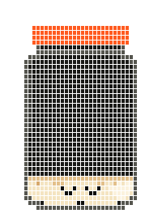
levi-dormant.svg
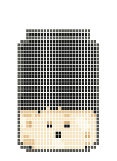
levi-sleepy.svg
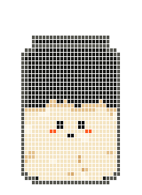
levi-bubbly.svg
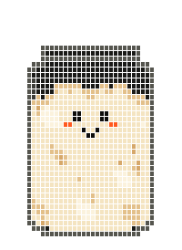
levi-rising.svg
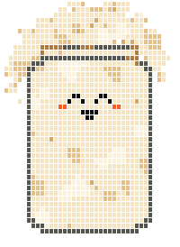
levi-overflowing.svg
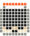
levi-badge-dormant.svg
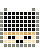
levi-badge-sleepy.svg
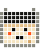
levi-badge-bubbly.svg
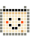
levi-badge-rising.svg
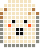
levi-badge-overflowing.svg
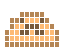
loaf-boule.svg
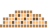
loaf-batard.svg
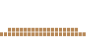
loaf-baguette.svg
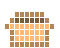
loaf-tin.svgStarter layers
svg.rd-starter__art ├ g.starter whole character │ ├ path.jar-glass empty glass cells (.c-glass, .c-glass-hi) │ ├ path.jar wall and rim cells (.c-wall; .c-crumb where dough covers it) │ ├ g.lid › path.b0…b7 dormant only (.c-bake); blinks out on wake │ └ g.dough the dough cells (static) │ ├ g.dough-surface opacity only, 8 bands each │ │ ├ g.erode › path.b0…b7 surface/edge cells that blink out │ │ └ g.fringe › path.b0…b7 cells just outside that blink in │ ├ g.flow │ │ ├ g.sheen › path.b0…b7 light band: climbs (states 0–3), rolls out (overflowing), fed flash │ │ └ g.fold › path.b0…b7 overflowing: caramel band one step ahead │ ├ g.trails › g.trail › rect drops: one cell lit at a time, downwards │ ├ g.pops › rect surface cells flash light, then go │ └ g.face › .cheeks .eyelids .eyes .mouth .blink (crust cover over the eyes) ├ g.sleep-bubble › g.sb ×9 dormant, sleepy: one still per step └ g.bubbles › g.trail › rect bubble columns, lit one cell at a time upward
4 · CSS and tokens
All CSS is in @layer blocks with BEM rd-* classes. Load order: base.css (declares layers), tokens.css, category-colors.css, then the feature files.
tokens.css | All tokens, dark and light. The goals & starter block at the end is new; merge it into the app's tokens.css. |
css/category-colors.css | Category / goal presets: data-color sets --cat, --cat-edge, --cat-tint. |
css/base.css | Layer order, reset, app chrome and shared components (header, bake, panel, buttons, fields, dialog, drawer, toast, switch, phone tab bar). Mirrors the existing app so the pages stand alone; keep yours where they overlap. |
css/goals.css | Release 1: goals list, goal detail, chart, accounts set-aside, Today summary and Upcoming. |
css/starter.css | Release 2: Levi fills, sizes, origins, badge button, summary row, drawer. |
css/starter-motion.css | Release 2: every Levi and loaf animation, plus reduced motion. |
css/shelf.css | Release 2: bakery shelf and loaf button. |
css/guide.css | Guide, components and motion pages only. Do not ship. |
5 · Accessibility
- Every goal status and starter state has a glyph and words; colour is never alone.
- All controls are real buttons, links and inputs with 44 px targets; loaves take keyboard focus and show their label.
- Toasts use a polite live region; dialogs are labelled modal dialogs; switches use role="switch".
- Reduced motion stops every loop and leaves the still frame.
6 · Handoff checklist (brief §10)
- ✓Every screen and state in §3 as an HTML page, light and dark, phone and desktop, linked from index.html
31 pages × 2 themes in pages/; phone chrome below 768 px; canvas has desktop, 390 and 320 boards - ✓New components in components.html; new tokens in tokens.css
components.html (+ light); tokens.css - ✓Starter: five state SVGs (card and badge), named layers documented, transform origins noted
assets/starter/; layers and origins below - ✓Motion spec (idle per state, fed, state change, wake up, welcome, loaf baked) and reduced-motion behaviour
motion.html, MOTION-SPEC.md - ✓Loaf: three or four shapes, tintable via --cat and --cat-edge, shelf states
4 shapes; empty, one, full, 20+ on goals pages and components - ✓Copy deck, including the starter's default name
copy.html, COPY-DECK.md · default name Levi - ✓No inline styles or scripts
pages contain no style="" and no script; colours come from classes - ○Validator and axe clean
run in your pipeline; not run here
7 · Also included
- MOTION-SPEC.md and COPY-DECK.md for the repo.
- Design canvas: Rising Dough · Goals & Starter.